What was learned
| Subject | Finding | What to do |
|---|
| Highest output | Tone scale 1.0, attenuation 0 dB: 6.7 dBm at 400 MHz, 5.7 dBm at 1000 MHz, 4.7 dBm at 1100 MHz, 5.1 dBm at 1200 MHz, 1.5 dBm at 2000 MHz. The team notes say +11 dBm; this unit does not reach it. | Plan tests around +5 dBm at most. Add an amplifier if a part needs more. |
| Level against attenuation setting | Follows the setting within 0.6 dB from 20 dB down to 89.75 dB (−89.5 dBm at 1100 MHz). Reads 0.6 to 1.0 dB low at 0 dB. | Use the look up table for 0 to 20 dB. From 20 dB up, output = (20 dB reading) + 20 − setting. |
| 0.25 dB steps | Average step 0.24 dB, but single steps range from 0.09 to 0.41 dB. The same setting gives the same level from above or below (within 0.02 dB). | Do not count steps to set a level. Read the level, or use whole-dB settings from the table. |
| Tone scale | Follows 20 log10(scale) within 0.25 dB at 20 dB attenuation, from scale 0.02 to 1.0. | Use the scale as a fine level control when the attenuation is 20 dB or more. |
| Distortion at high scale | At scale 1.0 and 0 dB attenuation a line 4 MHz below the tone is only 31 dB under it. At scale 0.5 it is 46 dB under; at scale 0.3, 52 dB under. | Keep the tone scale at 0.3 or below when a clean tone matters. |
| Third harmonic of the LO | A line near three times the tone frequency, 10 to 16 dB under the tone. Measured for tones of 350 to 700 MHz. For a 1.0 to 1.2 GHz tone it is at 3.0 to 3.6 GHz, above the spectrum analyzer's range, so not measured there. | Assume it is present at 1.0 to 1.2 GHz. Parts that work at 3 GHz (the amplifiers, mixers) receive it. Add a low-pass filter after the Pluto for compression or harmonic tests, and check with the SM200B. |
| Second and third harmonic of the tone | 50 to 60 dB under the tone at scale 0.5, 0 dB attenuation. 40 to 60 dB under at scale 1.0. | Small enough to ignore next to the line above. |
| LO leakage and other sideband | At 1100 MHz, 0 dB attenuation: LO leakage 61 to 67 dB under the tone, other sideband 67 to 72 dB under. | No action needed. |
| Tone offset from the LO | Level is flat within 0.4 dB out to 8 MHz from the LO, 1.3 dB down at 10 MHz, 7.8 dB down at 14 MHz. | Keep the tone within 8 MHz of the LO. The scripts use 1 MHz. |
| Two tones | At 0 dB attenuation with each tone at scale 0.5, the third-order products are 30 dB under the tones. At 5 dB attenuation with each tone at scale 0.25 to 0.5 they are over 50 dB under. | For two-tone tests use 5 dB attenuation or more and each tone at scale 0.4 or less. |
| Frequency | 12.6 to 13.1 ppm low against the spectrum analyzer, the same at every frequency. | Set the Pluto 12.8 ppm high (14.1 kHz at 1100 MHz) to land on a wanted frequency. |
| Repeatability | Leaving 1100 MHz and returning 30 times: level spread 0.03 dB. Setting 0 dB 30 times: 0.01 dB. | One reading is enough. |
| Settling | After a retune or an attenuation change the level is at its final value within one 5.3 ms sample. | A 0.1 s wait after each change is ample. |
| Flatness | At 0 dB: +1.2 dBm at 350 MHz falling to −6.3 dBm near 1600 MHz. 1.1 dB spread inside 1.0 to 1.2 GHz. | Use the per-frequency table, not one number, when a test covers more than one frequency. |
| USB, first dropout | Dropped off USB at 21:26 on 12 Oct, 5 minutes into the first run. Needed the cable replugged. | Scripts should save each reading as it is taken and be able to resume. |
| LO leakage at low levels | The LO leakage is about −60 dBm at 0 and 10 dB attenuation whatever the tone scale, −68 dBm at 20 dB, −78 dBm at 30 and 40 dB, then falls 1 dB per dB. With a small tone scale it is close to the tone: at 0 dB attenuation and scale 0.02 the tone is −28 dBm and the LO leakage only 31 dB under it. | To get a low level, raise the attenuation and keep the tone scale at 0.2 to 0.5. Do not use a small tone scale at low attenuation. |
| IF band table | 1000 to 1200 MHz in 1 MHz steps, attenuation 0 to 40 dB in 2 dB steps (4221 readings). At 0 dB the output is −1.14 to 0.28 dBm. It changes by at most 0.09 dB from one MHz to the next. | Use pluto_if_band_table.csv to turn a setting into dBm for any IF-band test. |
| Tuning step | A request for 5 Hz more moves the tone by about 5 to 7 Hz; 1 kHz more moves it 1001 Hz. During the test the tone was also drifting by 2 to 8 Hz per second. | Frequency can be set to a few Hz. Drift, not step size, limits how well the frequency is known. |
| Noise close to the tone | 30 to 45 kHz from the tone the noise is about −96 dBc/Hz, and 300 to 450 kHz away about −107 dBc/Hz. One pair of lines 1.4 kHz either side of the 1000 MHz tone, 59 dB under it; none at 1100 or 1200 MHz. | This is near what the spectrum analyzer itself contributes, so the Pluto is at least this good. It is not a limit for the planned tests. |
| Pulsed output | Works. Level during a pulse equals the continuous-tone level. Width and spacing are correct for pulses from 100 µs down to 300 ns (checked from the spectrum nulls). Below about 100 ns the pulse comes out wider and lower than asked, because the RF bandwidth setting is 18 MHz. Between pulses only the LO leakage remains (about 60 dB under the pulse at 0 dB attenuation). | Use sdr\pluto_pulse.py for pulse tests of 300 ns and longer. For 50 ns pulses the sample rate and bandwidth must be raised and rechecked. The spectrum analyzer cannot show pulse shape under 10 µs; use a detector and the oscilloscope. |
| Warm-up | Just plugged in (chip at 24 °C) the output was 0.4 dB higher and the frequency 9.2 ppm low. After hours of running (33 °C) it was 12.8 ppm low. | Let it run 30 minutes before a level-critical test, or take the reference reading at the same time as the test. |
| USB, second dropout | Dropped off USB a second time at 23:51 on 12 Oct, after 2 h 20 min of continuous use. Both times it stopped answering during a frequency change and then disappeared from Windows. | Any long run needs someone able to replug it, or a powered USB hub that can be switched from the computer. |
First run, tests A to H
| Test | Result | Date |
|---|
| A. Output against attenuation | 0.14, −0.36, −0.23 dBm at 0 dB (1000, 1100, 1200 MHz). 1 dB per dB within 0.2 dB from 20 to 40 dB. Reads 0.6 to 1.0 dB low at 0 dB. | 12 Oct |
| A. Other frequencies | 10 of 10 frequencies done: 400, 600, 800, 900, 1050, 1150, 1400, 1600, 1800, 2000 MHz | 12 Oct |
| B. Output against frequency | spread 1.08 dB inside 1000 to 1200 MHz; 6.5 dB over 350 to 2100 MHz | 12 Oct |
| C. Output against tone scale | follows 20 log10(scale) within 0.25 dB at 20 dB attenuation; 0.8 dB low at scale 1.0 and 0 dB attenuation. Highest output +4.7 dBm | 12 Oct |
| D. Frequency error | tone is 12.7 to 13.1 ppm low at all eight frequencies (14.1 kHz low at 1100 MHz) | 12 Oct |
| E. Spectrum | no line above the analyzer noise: LO leakage and other sideband more than 54 dB under the tone at 0 dB attenuation | 12 Oct |
| F. Stability | level spread 0.03 dB and frequency spread 186 Hz over 139 s | 12 Oct |
| G. Analyzer check and repeat | analyzer reads the same within 0.08 dB at four reference levels; repeat readings within 0.14 dB | 12 Oct |
| H. Tone off | nothing above the analyzer noise (−54 dBm) | 12 Oct |
Test A: output against attenuation setting, 12 Oct
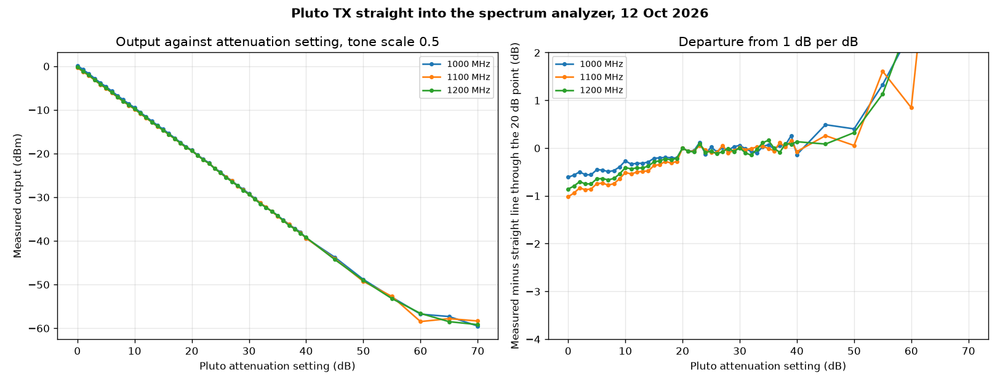
- Wiring: Pluto TX to the spectrum analyzer (Siglent SSA3021X) input. Nothing else connected.
- Pluto: one tone, 1 MHz above the LO, tone scale 0.5. The attenuation setting was stepped 0 to 40 dB in 1 dB steps, then 45 to 70 dB in 5 dB steps.
- Analyzer: reference level +10 dBm, span 2 MHz centred on the tone, one sweep per reading, peak marker.
- Repeated at 1000, 1100 and 1200 MHz. 47 settings at each, 141 readings.
| Attenuation setting (dB) | 1000 MHz (dB) | 1100 MHz (dB) | 1200 MHz (dB) |
|---|
| 0 | −0.61 | −1.02 | −0.86 |
| 1 | −0.57 | −0.94 | −0.80 |
| 2 | −0.50 | −0.84 | −0.71 |
| 3 | −0.56 | −0.87 | −0.75 |
| 5 | −0.45 | −0.75 | −0.64 |
| 10 | −0.27 | −0.51 | −0.41 |
| 30 | 0.05 | 0.01 | 0.00 |
| 40 | −0.14 | −0.07 | 0.13 |
| 50 | 0.40 | 0.05 | 0.32 |
| 60 | 2.45 | 0.84 | 2.73 |
| 70 | 9.72 | 10.98 | 10.17 |
The table above is the measured level minus a straight line of 1 dB per dB drawn through the 20 dB reading.
\[ \text{departure}(A) = P(A) - \left[P(20) + 20 - A\right] \]
- From 20 to 40 dB the output follows the setting within 0.2 dB.
- Below 20 dB the output is lower than the setting says: 0.3 to 0.5 dB low at 10 dB, 0.6 to 1.0 dB low at 0 dB. There is a step of about 0.2 dB between 19 and 20 dB.
- Test G: the analyzer reads the same tone within 0.08 dB at reference levels from −10 to +20 dBm, so the analyzer is not the cause.
- Test C: at 0 dB the output rises 0.2 dB less than it should between tone scale 0.05 and 0.5. So about 0.2 dB of the shortfall is the output stage compressing. The rest is the attenuator steps not being exact.
- At 55 dB and above the reading stops falling. The tone is then at the analyzer noise level for this reference level (about −58 dBm). The rows at 55 to 70 dB are not valid Pluto levels.
- The output at 0 dB and tone scale 0.5 is about 0 dBm (1 mW). At tone scale 1.0 it is +4.7 dBm (3.0 mW) at 1100 MHz. The team notes give a maximum of +11 dBm; this Pluto does not reach that.
Look up table: attenuation setting to output power
| Setting (dB) | 1000 MHz (dBm) | 1100 MHz (dBm) | 1200 MHz (dBm) |
|---|
| 0 | 0.14 | −0.36 | −0.23 |
| 1 | −0.81 | −1.29 | −1.17 |
| 2 | −1.75 | −2.18 | −2.07 |
| 3 | −2.81 | −3.22 | −3.12 |
| 4 | −3.81 | −4.20 | −4.12 |
| 5 | −4.70 | −5.09 | −5.01 |
| 6 | −5.71 | −6.08 | −6.01 |
| 7 | −6.74 | −7.12 | −7.03 |
| 8 | −7.72 | −8.09 | −8.01 |
| 9 | −8.64 | −8.99 | −8.91 |
| 10 | −9.52 | −9.86 | −9.78 |
| 11 | −10.58 | −10.89 | −10.80 |
| 12 | −11.57 | −11.85 | −11.79 |
| 13 | −12.57 | −12.83 | −12.79 |
| 14 | −13.54 | −13.83 | −13.75 |
| 15 | −14.46 | −14.71 | −14.66 |
| 16 | −15.45 | −15.69 | −15.64 |
| 17 | −16.44 | −16.62 | −16.60 |
| 18 | −17.45 | −17.66 | −17.62 |
| 19 | −18.46 | −18.63 | −18.58 |
| 20 | −19.25 | −19.34 | −19.37 |
| 21 | −20.32 | −20.41 | −20.44 |
| 22 | −21.30 | −21.41 | −21.45 |
| 23 | −22.13 | −22.29 | −22.27 |
| 24 | −23.37 | −23.39 | −23.47 |
| 25 | −24.23 | −24.44 | −24.43 |
| 26 | −25.33 | −25.44 | −25.49 |
| 27 | −26.24 | −26.29 | −26.44 |
| 28 | −27.29 | −27.44 | −27.38 |
| 29 | −28.22 | −28.40 | −28.44 |
| 30 | −29.19 | −29.33 | −29.36 |
| 31 | −30.26 | −30.38 | −30.47 |
| 32 | −31.32 | −31.36 | −31.52 |
| 33 | −32.35 | −32.32 | −32.40 |
| 34 | −33.22 | −33.30 | −33.26 |
| 35 | −34.18 | −34.35 | −34.21 |
| 36 | −35.26 | −35.40 | −35.37 |
| 37 | −36.19 | −36.23 | −36.46 |
| 38 | −37.18 | −37.32 | −37.27 |
| 39 | −37.99 | −38.19 | −38.29 |
| 40 | −39.38 | −39.42 | −39.24 |
| 45 | −43.76 | −44.09 | −44.29 |
| 50 | −48.85 | −49.29 | −49.05 |
Tone scale 0.5. Files: pluto_tx_calibration.csv and pluto_tx_calibration.json.
Test A at other frequencies
| Frequency (MHz) | 0 dB | 2 dB | 4 dB | 6 dB | 8 dB | 10 dB | 15 dB | 20 dB | 30 dB | 40 dB |
|---|
| 400 | 0.92 | −0.95 | −3.01 | −4.92 | −6.95 | −8.79 | −13.87 | −18.72 | −28.75 | −38.59 |
| 600 | 0.58 | −1.27 | −3.30 | −5.22 | −7.25 | −9.08 | −14.12 | −18.92 | −29.02 | −38.82 |
| 800 | 0.07 | −1.79 | −3.83 | −5.74 | −7.76 | −9.57 | −14.56 | −19.31 | −29.41 | −39.30 |
| 900 | 0.39 | −1.43 | −3.46 | −5.36 | −7.38 | −9.17 | −14.12 | −18.85 | −29.02 | −38.73 |
| 1050 | 0.23 | −1.62 | −3.67 | −5.57 | −7.59 | −9.38 | −14.33 | −19.02 | −29.15 | −38.65 |
| 1150 | −1.01 | −2.85 | −4.88 | −6.76 | −8.73 | −10.50 | −15.35 | −20.07 | −30.03 | −40.02 |
| 1400 | −1.71 | −3.55 | −5.55 | −7.43 | −9.39 | −11.14 | −15.97 | −20.59 | −30.53 | −40.71 |
| 1600 | −5.18 | −6.98 | −8.95 | −10.80 | −12.74 | −14.38 | −19.26 | −23.80 | −33.92 | −43.62 |
| 1800 | −3.33 | −5.18 | −7.19 | −9.02 | −10.94 | −12.68 | −17.50 | −22.15 | −32.02 | −41.94 |
| 2000 | −4.06 | −5.90 | −7.88 | −9.69 | −11.59 | −13.33 | −18.09 | −22.87 | −32.77 | −42.46 |
Output in dBm at each attenuation setting. Tone scale 0.5.
Test B: output against frequency
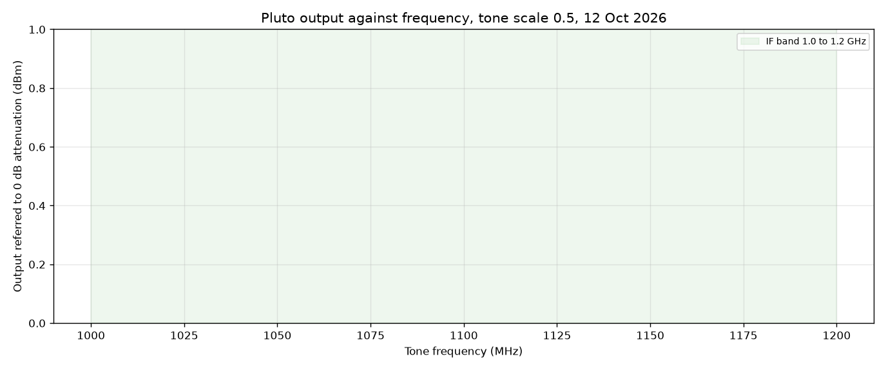
Attenuation 0 dB: −6.33 to 1.21 dBm over 350 to 2100 MHz (87 points). Inside 1000 to 1200 MHz: −1.09 to 0.26 dBm, a spread of 1.35 dB.
Attenuation 20 dB: −25.01 to −18.50 dBm over 350 to 2100 MHz (87 points). Inside 1000 to 1200 MHz: −20.14 to −19.06 dBm, a spread of 1.08 dB.
| Frequency (MHz) | At 20 dB (dBm) | At 0 dB (dBm) |
|---|
| 350 | −18.68 | 0.95 |
| 375 | −18.82 | 0.80 |
| 400 | −18.73 | 0.89 |
| 425 | −19.08 | 0.47 |
| 450 | −18.98 | 0.63 |
| 475 | −18.68 | 0.96 |
| 500 | −18.70 | 0.96 |
| 525 | −18.50 | 1.21 |
| 550 | −18.55 | 1.01 |
| 575 | −18.52 | 1.02 |
| 600 | −18.89 | 0.53 |
| 625 | −19.06 | 0.49 |
| 650 | −18.61 | 1.00 |
| 675 | −18.56 | 1.00 |
| 700 | −18.52 | 1.09 |
| 725 | −18.59 | 0.78 |
| 750 | −18.73 | 0.62 |
| 775 | −19.05 | 0.27 |
| 800 | −19.36 | 0.03 |
| 825 | −19.01 | 0.48 |
| 850 | −18.88 | 0.55 |
| 875 | −18.87 | 0.58 |
| 900 | −18.90 | 0.35 |
| 925 | −19.10 | 0.10 |
| 950 | −19.20 | −0.11 |
| 975 | −19.59 | −0.38 |
| 1000 | −19.30 | 0.05 |
| 1010 | −19.14 | 0.20 |
| 1020 | −19.09 | 0.25 |
| 1025 | −19.09 | 0.26 |
| 1030 | −19.06 | 0.26 |
| 1040 | −19.08 | 0.22 |
| 1050 | −19.08 | 0.16 |
| 1060 | −19.16 | 0.02 |
| 1070 | −19.22 | −0.24 |
| 1075 | −19.33 | −0.35 |
| 1080 | −19.38 | −0.46 |
| 1090 | −19.42 | −0.53 |
| 1100 | −19.41 | −0.47 |
| 1110 | −19.36 | −0.39 |
| 1120 | −19.42 | −0.46 |
| 1125 | −19.52 | −0.56 |
| 1130 | −19.64 | −0.69 |
| 1140 | −19.92 | −0.97 |
| 1150 | −20.12 | −1.09 |
| 1160 | −20.14 | −0.99 |
| 1170 | −19.91 | −0.73 |
| 1175 | −19.76 | −0.58 |
| 1180 | −19.63 | −0.44 |
| 1190 | −19.44 | −0.31 |
| 1200 | −19.43 | −0.35 |
| 1225 | −19.73 | −0.62 |
| 1250 | −20.44 | −1.69 |
| 1275 | −20.78 | −2.13 |
| 1300 | −20.35 | −1.54 |
| 1325 | −21.37 | −2.57 |
| 1350 | −21.43 | −2.26 |
| 1375 | −20.37 | −1.44 |
| 1400 | −20.70 | −1.85 |
| 1425 | −22.02 | −3.36 |
| 1450 | −23.43 | −4.89 |
| 1475 | −22.43 | −3.61 |
| 1500 | −22.65 | −3.86 |
| 1525 | −24.04 | −5.09 |
| 1550 | −23.47 | −4.52 |
| 1575 | −23.05 | −4.52 |
| 1600 | −23.96 | −5.29 |
| 1625 | −25.01 | −6.33 |
| 1650 | −24.43 | −5.66 |
| 1675 | −22.51 | −3.76 |
| 1700 | −24.11 | −5.37 |
| 1725 | −24.41 | −5.46 |
| 1750 | −22.42 | −3.45 |
| 1775 | −21.88 | −2.99 |
| 1800 | −22.07 | −3.25 |
| 1825 | −23.67 | −5.08 |
| 1850 | −23.58 | −4.72 |
| 1875 | −22.67 | −3.81 |
| 1900 | −23.50 | −4.56 |
| 1925 | −22.56 | −3.39 |
| 1950 | −21.33 | −2.37 |
| 1975 | −21.47 | −2.68 |
| 2000 | −22.73 | −4.08 |
| 2025 | −24.51 | −5.65 |
| 2050 | −24.33 | −5.40 |
| 2075 | −23.29 | −4.23 |
| 2100 | −22.64 | −3.41 |
Test C: output against tone scale
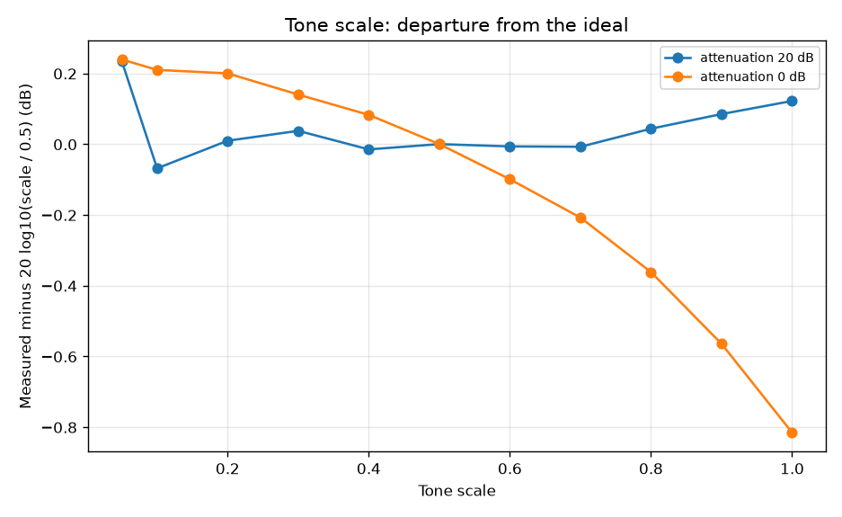
| Attenuation (dB) | Tone scale | Output (dBm) | Output minus ideal (dB) |
|---|
| 20 | 0.05 | −39.20 | 0.23 |
| 20 | 0.1 | −33.48 | −0.07 |
| 20 | 0.2 | −27.38 | 0.01 |
| 20 | 0.3 | −23.83 | 0.04 |
| 20 | 0.4 | −21.39 | −0.01 |
| 20 | 0.5 | −19.43 | 0.00 |
| 20 | 0.6 | −17.85 | −0.01 |
| 20 | 0.7 | −16.52 | −0.01 |
| 20 | 0.8 | −15.31 | 0.04 |
| 20 | 0.9 | −14.24 | 0.08 |
| 20 | 1.0 | −13.29 | 0.12 |
| 0 | 0.05 | −20.22 | 0.24 |
| 0 | 0.1 | −14.23 | 0.21 |
| 0 | 0.2 | −8.22 | 0.20 |
| 0 | 0.3 | −4.76 | 0.14 |
| 0 | 0.4 | −2.32 | 0.08 |
| 0 | 0.5 | −0.46 | 0.00 |
| 0 | 0.6 | 1.02 | −0.10 |
| 0 | 0.7 | 2.25 | −0.21 |
| 0 | 0.8 | 3.26 | −0.36 |
| 0 | 0.9 | 4.08 | −0.56 |
| 0 | 1.0 | 4.74 | −0.82 |
\[ P_\text{ideal}(s) = P(0.5) + 20\log_{10}\!\left(\frac{s}{0.5}\right) \]
- At attenuation 20 dB the output follows the tone scale within 0.25 dB from 0.05 to 1.0.
- At attenuation 0 dB the output falls behind above scale 0.5: 0.8 dB low at scale 1.0. The output stage is compressing.
- The tone scale can be used as a fine level control when the attenuation is 20 dB or more.
Test D: frequency error
| Set (MHz) | Error (Hz) | Error (ppm) |
|---|
| 400 | −5227 | −13.07 |
| 700 | −9013 | −12.88 |
| 1000 | −12800 | −12.80 |
| 1100 | −14054 | −12.78 |
| 1200 | −15307 | −12.76 |
| 1500 | −19120 | −12.75 |
| 1800 | −22880 | −12.71 |
| 2000 | −25414 | −12.71 |
Read with a 20 kHz span. The tone is 12.7 to 13.1 ppm low at every frequency, inside the 25 ppm specification. The error includes the analyzer's own reference error; the two cannot be separated without a third reference. To put a tone exactly on a wanted frequency, set the Pluto 12.8 ppm higher: 14.1 kHz higher at 1100 MHz.
\[ f_\text{set} = f_\text{wanted}\,(1 + 12.8\times10^{-6}) \]
Test F: stability
- 40 readings over 139 s at 1100 MHz, attenuation 20 dB.
- Level: mean −19.37 dBm, spread 0.03 dB, standard deviation 0.007 dB.
- Frequency: mean error −13983 Hz, spread 186 Hz.
Test E: spectrum
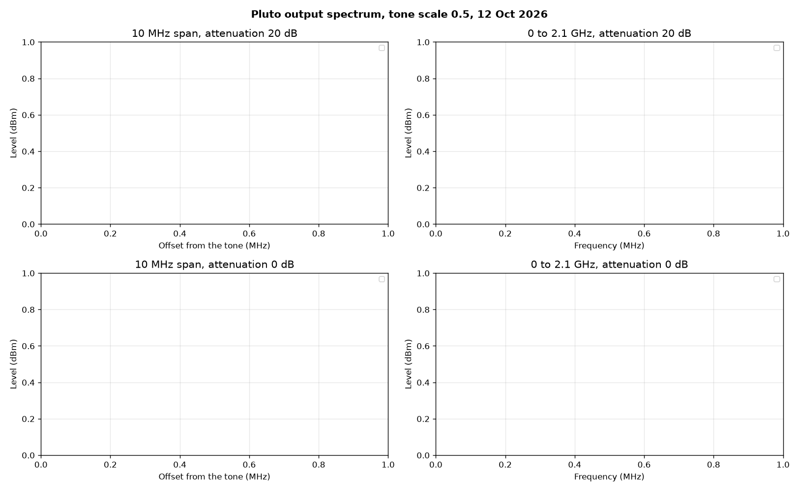
- At attenuation 0 dB no line stands out of the analyzer noise within 5 MHz of the tone. The LO leakage (1 MHz below) and the other sideband (2 MHz below) are both under −54 dB relative to the tone.
- At attenuation 20 dB the analyzer noise is only 36 dB under the tone with these settings, so that trace gives no better limit.
- From 30 MHz to 2.1 GHz at attenuation 0 dB, nothing else is above the noise, 45 dB under the tone.
- These are limits set by the analyzer settings (reference level +10 dBm, automatic bandwidth). The overnight run repeats this with a narrower bandwidth to find the actual levels.
Second harmonic of the 1000 MHz tone, read at 2000 MHz: −57.50 dBm at attenuation 20 dB; −49.08 dBm at attenuation 0 dB.
Test G: analyzer check and repeat
| Analyzer reference level (dBm) | Reading of the same tone (dBm) |
|---|
| −10 | −19.44 |
| 0 | −19.48 |
| 10 | −19.42 |
| 20 | −19.50 |
| 10 | −19.42 |
| Attenuation (dB), in the order read | Output (dBm) |
|---|
| 40 | −39.23 |
| 20 | −19.43 |
| 0 | −0.47 |
| 20 | −19.46 |
| 40 | −39.37 |
Test H: tone off
| Attenuation (dB) | Largest point, frequency (MHz) | Level (dBm) |
|---|
| 0 | 1099.013 | −54.64 |
| 10 | 1098.973 | −52.63 |
| 31 | 1097.72 | −53.93 |
With the tone scale at 0 nothing is above the analyzer noise (about −54 dBm with these settings) at any attenuation. The frequencies in the table are noise peaks, not lines.
Files
Folder clinic\claude\pluto_characterization\: readings.csv (every reading, with time, settings, measured frequency and level), characterize_pluto.py (takes the readings), analyze_pluto.py (tables and plots), summary.json, pluto_tx_calibration.csv, spectrum_*.csv (traces, test E), run_log.txt.
Overnight run, 12 to 13 Oct
Started 21:44 on 12 Oct. Same wiring: Pluto TX straight into the spectrum analyzer. 10412 readings and 227 saved traces so far (last reading 2026-10-13 11:05:27). Script overnight.py, readings overnight_readings.csv, traces in traces\, analysis analyze_overnight.py, numbers overnight_summary.json.
Low level: output down to the 89.75 dB setting
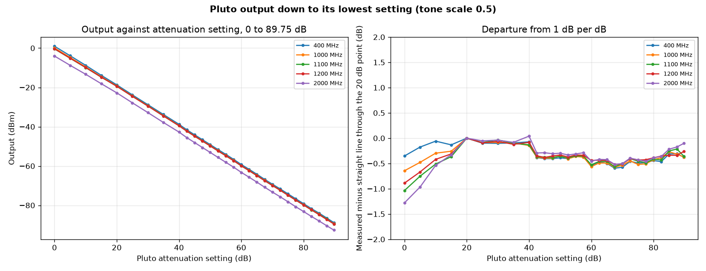
- One analyzer setting cannot cover 0 to −90 dBm. Four were used: reference level +10 dBm; −10 dBm; −30 dBm with the preamp, 1 kHz bandwidth; the same with 100 Hz bandwidth.
- Each setting was read at five attenuation settings shared with the one before. The average difference over those five is the correction that ties it to the one before.
- The +10 dBm setting is used for 0 to 40 dB, the −10 dBm setting to 60 dB, the preamp settings above that.
\[ c_2 = \overline{P_1(A) - P_2(A)}\ \text{over the shared}\ A \qquad P(A) = P_2(A) + c_2 \]
| Frequency (MHz) | Corrections between settings (dB) | Largest departure from 1 dB per dB, 20 to 89.75 dB (dB) | Output at 89.75 dB (dBm) |
|---|
| 400 | −0.06, −0.15, −0.11 | 0.59 | −88.82 |
| 1000 | 0.01, 0.09, 0.11 | 0.57 | −89.39 |
| 1100 | −0.02, 0.29, 0.31 | 0.56 | −89.50 |
| 1200 | −0.09, 0.26, 0.26 | 0.52 | −89.45 |
| 2000 | −0.13, −0.42, −0.42 | 0.52 | −92.62 |
Analyzer noise at the lowest setting (preamp, 100 Hz bandwidth): about −119 dBm, 29 dB under the lowest Pluto level.
| Setting (dB) | Output at 1100 MHz (dBm) |
|---|
| 40 | −39.52 |
| 42.50 | −42.26 |
| 45 | −44.77 |
| 47.50 | −47.27 |
| 50 | −49.75 |
| 52.50 | −52.28 |
| 55 | −54.74 |
| 57.50 | −57.24 |
| 60 | −59.92 |
| 62.50 | −62.35 |
| 65 | −64.85 |
| 67.50 | −67.45 |
| 70 | −69.90 |
| 72.50 | −72.30 |
| 75 | −74.85 |
| 77.50 | −77.38 |
| 80 | −79.81 |
| 82.50 | −82.32 |
| 85 | −84.65 |
| 87.50 | −87.11 |
| 89.75 | −89.50 |
Fine steps: 0.25 dB attenuation steps, 0 to 12 dB
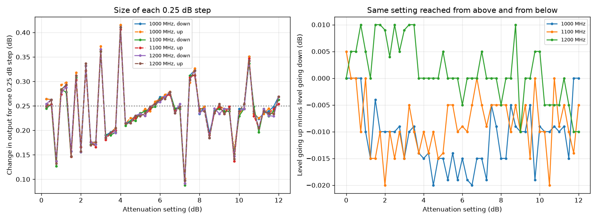
| Frequency (MHz) | Mean step (dB) | Smallest (dB) | Largest (dB) | Standard deviation (dB) | Up minus down, largest (dB) |
|---|
| 1000 | 0.244 | 0.098 | 0.415 | 0.058 | 0.020 |
| 1100 | 0.239 | 0.088 | 0.410 | 0.059 | 0.020 |
| 1200 | 0.240 | 0.092 | 0.411 | 0.059 | 0.010 |
- Each setting was read going down from 12 to 0 dB, then going up. Analyzer bandwidth 3 kHz, span 200 kHz.
- The steps are uneven: the same pattern appears at all three frequencies and in both directions, so it is the Pluto, not noise.
- Going up and going down agree within 0.02 dB. There is no memory of the direction.
Tone scale at five frequencies
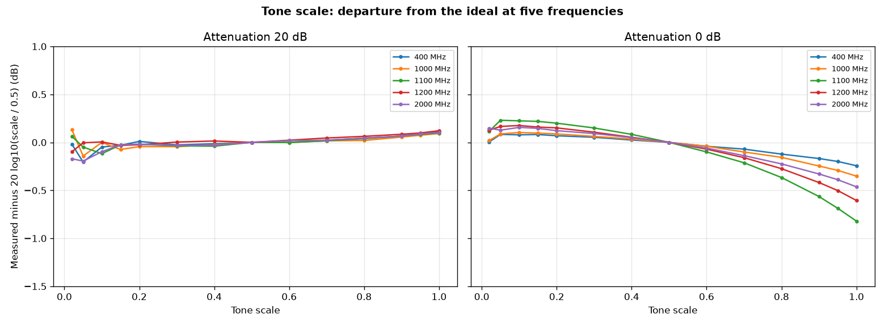
| Frequency (MHz) | Attenuation (dB) | Output at scale 1.0 (dBm) | Departure at scale 1.0 (dB) | Departure at scale 0.1 (dB) | Departure at scale 0.02 (dB) |
|---|
| 400 | 20 | −12.62 | 0.11 | −0.05 | −0.02 |
| 1000 | 20 | −13.21 | 0.09 | −0.00 | 0.13 |
| 1100 | 20 | −13.32 | 0.10 | −0.12 | 0.06 |
| 1200 | 20 | −13.33 | 0.12 | 0.00 | −0.10 |
| 2000 | 20 | −16.63 | 0.10 | −0.10 | −0.17 |
| 400 | 0 | 6.65 | −0.24 | 0.08 | 0.00 |
| 1000 | 0 | 5.67 | −0.35 | 0.10 | 0.02 |
| 1100 | 0 | 4.71 | −0.82 | 0.22 | 0.12 |
| 1200 | 0 | 5.07 | −0.61 | 0.18 | 0.13 |
| 2000 | 0 | 1.51 | −0.46 | 0.16 | 0.15 |
Departure = measured level minus the level predicted from the scale 0.5 reading.
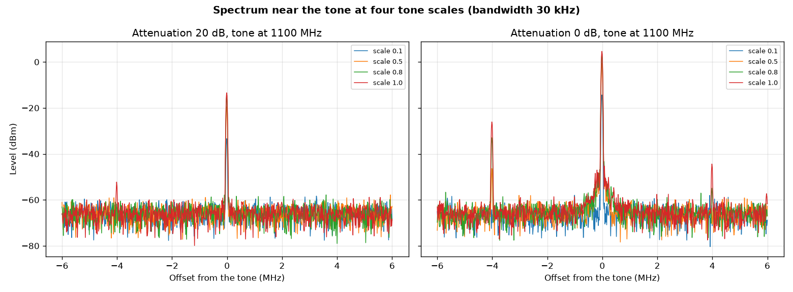
| Attenuation (dB) | Tone scale | Tone (dBm) | 1 MHz below (LO) | 2 MHz below (other sideband) | 4 MHz below | 1 MHz above | 2 MHz above | Median of trace (noise) |
|---|
| 0 | 0.02 | −28.40 | −30.5 | −32.8 | −33.0 | −35.1 | −32.7 | −37.8 |
| 0 | 0.05 | −20.36 | −38.1 | −42.4 | −39.4 | −40.4 | −40.3 | −45.6 |
| 0 | 0.1 | −14.34 | −43.6 | −48.7 | −48.1 | −49.0 | −45.1 | −52.1 |
| 0 | 0.15 | −10.84 | −48.2 | −51.2 | −51.6 | −52.4 | −50.5 | −55.2 |
| 0 | 0.2 | −8.35 | −48.8 | −52.2 | −50.2 | −52.6 | −52.5 | −57.6 |
| 0 | 0.3 | −4.87 | −53.5 | −55.3 | −51.7 | −55.3 | −58.2 | −60.9 |
| 0 | 0.4 | −2.45 | −57.1 | −58.2 | −48.9 | −58.0 | −56.4 | −63.2 |
| 0 | 0.5 | −0.57 | −59.9 | −61.4 | −45.8 | −59.7 | −59.8 | −65.3 |
| 0 | 0.6 | 0.92 | −60.4 | −63.5 | −42.7 | −60.0 | −62.2 | −66.7 |
| 0 | 0.7 | 2.13 | −62.6 | −64.6 | −39.1 | −62.5 | −64.2 | −67.6 |
| 0 | 0.8 | 3.15 | −62.4 | −63.8 | −36.2 | −63.0 | −62.9 | −68.7 |
| 0 | 0.9 | 3.96 | −61.6 | −61.9 | −33.0 | −65.8 | −64.2 | −69.4 |
| 0 | 0.95 | 4.31 | −63.5 | −61.0 | −31.7 | −64.4 | −65.2 | −69.3 |
| 0 | 1.0 | 4.62 | −63.3 | −66.8 | −30.7 | −64.6 | −62.2 | −70.1 |
- Levels in dB relative to the tone. Attenuation 0 dB, tone at 1100 MHz, bandwidth 30 kHz.
- The line 4 MHz below the tone grows as the scale goes up: 46 dB under at scale 0.5, 31 dB under at scale 1.0. It is three times the 1 MHz offset on the other side of the LO, which is what the third harmonic of the tone generator's 1 MHz signal produces.
- The other columns stay near the noise of this measurement. The tone offset test below measures the LO leakage and the other sideband with a narrower bandwidth.
Tone offset from the LO
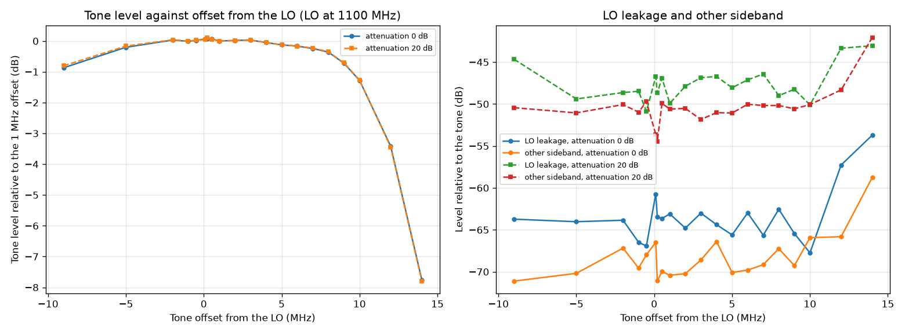
| Attenuation (dB) | Offset (MHz) | Tone (dBm) | Relative to 1 MHz offset (dB) | LO leakage (dB rel. tone) | Other sideband (dB rel. tone) |
|---|
| 0 | −9.0 | −1.34 | −0.87 | −63.7 | −71.1 |
| 0 | −5.0 | −0.68 | −0.21 | −64.0 | −70.2 |
| 0 | −2.0 | −0.45 | 0.03 | −63.9 | −67.2 |
| 0 | −1.0 | −0.48 | −0.01 | −66.5 | −69.6 |
| 0 | −0.5 | −0.46 | 0.02 | −66.9 | −68.0 |
| 0 | 0.1 | −0.41 | 0.07 | −60.7 | −66.5 |
| 0 | 0.2 | −0.40 | 0.08 | −63.5 | −71.1 |
| 0 | 0.5 | −0.41 | 0.07 | −63.7 | −70.0 |
| 0 | 1.0 | −0.47 | 0.00 | −63.1 | −70.4 |
| 0 | 2.0 | −0.46 | 0.02 | −64.8 | −70.2 |
| 0 | 3.0 | −0.45 | 0.03 | −63.0 | −68.6 |
| 0 | 4.0 | −0.52 | −0.05 | −64.4 | −66.4 |
| 0 | 5.0 | −0.60 | −0.13 | −65.6 | −70.1 |
| 0 | 6.0 | −0.64 | −0.17 | −63.0 | −69.8 |
| 0 | 7.0 | −0.72 | −0.24 | −65.6 | −69.2 |
| 0 | 8.0 | −0.84 | −0.36 | −62.5 | −67.2 |
| 0 | 9.0 | −1.20 | −0.72 | −65.4 | −69.3 |
| 0 | 10.0 | −1.75 | −1.28 | −67.7 | −65.9 |
| 0 | 12.0 | −3.89 | −3.42 | −57.3 | −65.8 |
| 0 | 14.0 | −8.23 | −7.76 | −53.7 | −58.8 |
- LO fixed at 1100 MHz. The tone was moved from 0.1 to 14 MHz above it, and 0.5 to 9 MHz below it. Bandwidth 3 kHz.
- Sample rate 30.72 MS/s, RF bandwidth setting 18 MHz (9 MHz either side). The fall above 8 MHz is that filter.
- LO leakage and other sideband readings at 20 dB attenuation are at the analyzer noise and are not listed.
Two tones
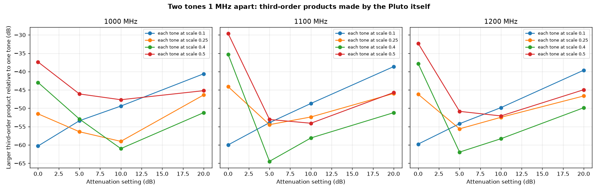
| Frequency (MHz) | Scale of each tone | Attenuation (dB) | Each tone (dBm) | Larger third-order product (dB rel. one tone) | LO leakage (dB rel. one tone) |
|---|
| 1100 | 0.1 | 0 | −14.25 | −60.0 | −44.1 |
| 1100 | 0.1 | 5 | −19.18 | −53.9 | −41.6 |
| 1100 | 0.1 | 10 | −23.84 | −48.7 | −36.8 |
| 1100 | 0.1 | 20 | −33.45 | −38.6 | −37.8 |
| 1100 | 0.25 | 0 | −6.44 | −44.1 | −57.4 |
| 1100 | 0.25 | 5 | −11.20 | −54.5 | −48.6 |
| 1100 | 0.25 | 10 | −15.94 | −52.4 | −43.4 |
| 1100 | 0.25 | 20 | −25.46 | −46.0 | −44.0 |
| 1100 | 0.4 | 0 | −2.61 | −35.3 | −55.5 |
| 1100 | 0.4 | 5 | −7.13 | −64.5 | −51.8 |
| 1100 | 0.4 | 10 | −11.88 | −58.1 | −47.7 |
| 1100 | 0.4 | 20 | −21.35 | −51.2 | −46.8 |
| 1100 | 0.5 | 0 | −0.98 | −29.6 | −49.6 |
| 1100 | 0.5 | 5 | −5.18 | −53.1 | −53.6 |
| 1100 | 0.5 | 10 | −9.92 | −54.1 | −49.1 |
| 1100 | 0.5 | 20 | −19.37 | −45.7 | −48.4 |
- Tone 1 is 2 MHz above the LO, tone 2 is 3 MHz above. Both the same scale.
- The third-order products fall at 2×2 − 3 = 1 MHz and 2×3 − 2 = 4 MHz above the LO. Each was read with a 1 kHz bandwidth.
- Products under about −72 dBm are analyzer noise, so the rows at 20 dB attenuation are limits, not levels.
\[ f_\text{IM3} = 2f_1 - f_2 \quad\text{and}\quad 2f_2 - f_1 \]
At 0 dB attenuation the products grow fast with scale (60 dB under at scale 0.1, 30 dB under at scale 0.5). At 5 dB attenuation and scale 0.5 they are 53 dB under. The output stage is the cause.
Lines close to the tone, 350 to 2050 MHz
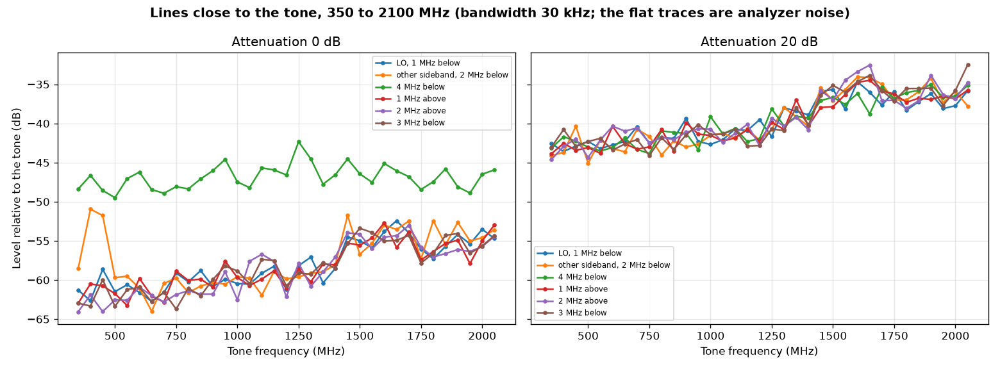
| Line | Median (dB rel. tone) | Largest (dB rel. tone) | At (MHz) |
|---|
| LO, 1 MHz below | −58.6 | −52.4 | 1650 |
| other sideband, 2 MHz below | −58.9 | −50.9 | 400 |
| 4 MHz below | −46.8 | −42.3 | 1250 |
| 1 MHz above | −58.8 | −52.7 | 1600 |
| 2 MHz above | −57.9 | −53.0 | 1700 |
| 3 MHz below | −58.5 | −53.4 | 1500 |
Attenuation 0 dB, tone scale 0.5, bandwidth 30 kHz. All lines except “4 MHz below” are at the analyzer noise for this bandwidth, so they are limits. The 2100 MHz point is left out: it is at the edge of the analyzer's range.
Harmonics
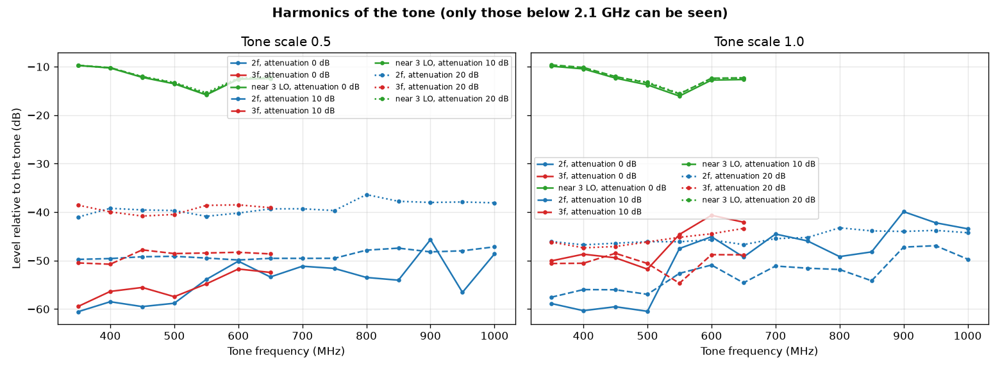
| Tone (MHz) | Tone (dBm) | Line near 3 × LO (dBm) | Relative to the tone (dB) |
|---|
| 350 | 0.90 | −8.84 | −9.7 |
| 400 | 0.83 | −9.44 | −10.3 |
| 450 | 0.59 | −11.61 | −12.2 |
| 500 | 0.92 | −12.61 | −13.5 |
| 550 | 0.95 | −14.86 | −15.8 |
| 600 | 0.48 | −12.10 | −12.6 |
| 650 | 0.95 | −11.48 | −12.4 |
- Attenuation 0 dB, tone scale 0.5. The line is at 3 × LO − 1 MHz (for a 400 MHz tone: 3 × 399 − 1 = 1196 MHz).
- It is 10 to 16 dB under the tone and does not change with the attenuation setting or the tone scale. The Pluto's mixer is driven by a square-wave LO, which has a third harmonic; the same is expected at every LO frequency.
- It can only be seen here for tones up to 700 MHz, because the analyzer stops at 2.1 GHz. For 1.0 to 1.2 GHz tones it falls at 3.0 to 3.6 GHz.
\[ f_\text{line} = 3 f_\text{LO} - f_\text{offset} = 3\,(f_\text{tone} - 1\ \text{MHz}) - 1\ \text{MHz} \]
| Tone (MHz) | Tone scale | 2 × tone (dB rel. tone) | 3 × tone (dB rel. tone) |
|---|
| 350 | 0.5 | −60.5 | −59.4 |
| 400 | 0.5 | −58.5 | −56.4 |
| 450 | 0.5 | −59.5 | −55.5 |
| 500 | 0.5 | −58.8 | −57.4 |
| 550 | 0.5 | −53.9 | −54.8 |
| 600 | 0.5 | −50.1 | −51.7 |
| 650 | 0.5 | −53.4 | −52.4 |
| 700 | 0.5 | −51.2 | — |
| 750 | 0.5 | −51.6 | — |
| 800 | 0.5 | −53.5 | — |
| 850 | 0.5 | −54.0 | — |
| 900 | 0.5 | −45.7 | — |
| 950 | 0.5 | −56.5 | — |
| 1000 | 0.5 | −48.6 | — |
| 350 | 1.0 | −58.9 | −50.1 |
| 400 | 1.0 | −60.3 | −48.7 |
| 450 | 1.0 | −59.5 | −49.4 |
| 500 | 1.0 | −60.5 | −51.8 |
| 550 | 1.0 | −47.5 | −44.6 |
| 600 | 1.0 | −45.1 | −40.6 |
| 650 | 1.0 | −49.3 | −42.1 |
| 700 | 1.0 | −44.5 | — |
| 750 | 1.0 | −45.9 | — |
| 800 | 1.0 | −49.2 | — |
| 850 | 1.0 | −48.2 | — |
| 900 | 1.0 | −39.9 | — |
| 950 | 1.0 | −42.2 | — |
| 1000 | 1.0 | −43.4 | — |
Attenuation 0 dB. A dash means the harmonic is above 2.1 GHz or under the analyzer noise.
Any earlier or later test that measures total power after the Pluto (a power meter, a detector, or an amplifier driven near compression) includes the line near 3 × LO. The LO buffer amp compression test of 12 Oct read the output at the tone frequency only, so its output powers are not affected, but the amp was also amplifying a 3.0 to 3.6 GHz signal about 10 to 16 dB smaller.
Wide search, 0 to 2.1 GHz
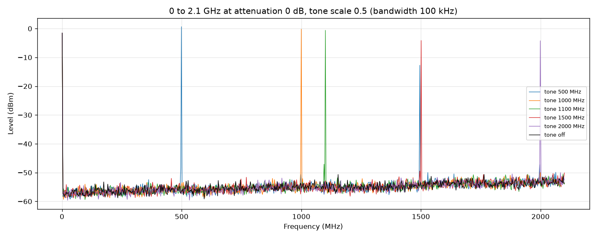
| Tone (MHz) | Tone (dBm) | Largest other line at (MHz) | Level (dBm) | Relative to the tone (dB) |
|---|
| 400 | 0.85 | 1196 | −9.3 | −10.2 |
| 500 | 0.66 | 1495 | −12.7 | −13.4 |
| 600 | 0.44 | 1795 | −12.3 | −12.7 |
| 700 | 0.98 | 2097 | −12.8 | −13.8 |
| 800 | −0.24 | 1635 | −50.5 | −50.3 |
| 900 | 0.30 | 1801 | −45.2 | −45.5 |
| 1000 | −0.20 | 1999 | −49.9 | −49.7 |
| 1100 | −0.59 | 2094 | −50.5 | −49.9 |
| 1200 | −0.42 | 1638 | −50.4 | −50.0 |
| 1300 | −1.87 | 2010 | −50.6 | −48.7 |
| 1400 | −1.88 | 1700 | −50.1 | −48.2 |
| 1500 | −4.13 | 2100 | −50.1 | −46.0 |
| 1600 | −5.51 | 2047 | −48.6 | −43.1 |
| 1700 | −5.38 | 1809 | −49.9 | −44.5 |
| 1800 | −3.55 | 1711 | −49.5 | −45.9 |
| 1900 | −4.60 | 2089 | −50.6 | −46.0 |
| 2000 | −4.22 | 2083 | −50.0 | −45.8 |
Attenuation 0 dB, bandwidth 100 kHz. For tones of 400 to 700 MHz the largest other line is the one near 3 × LO. For tones of 800 MHz and above nothing is above the analyzer noise (about −50 dBm at this bandwidth) below 2.1 GHz; the frequencies listed for those rows are noise peaks.
Retune and attenuation repeatability
| What was repeated | Readings | Mean (dBm) | Spread (dB) | Standard deviation (dB) |
|---|
| Tune to another frequency (400 to 1900 MHz, random), return to 1100 MHz, 20 dB | 30 | −19.462 | 0.034 | 0.009 |
| Set 0 dB (after 20 dB) | 30 | −0.505 | 0.009 | 0.002 |
| Set 40 dB (after 0 dB) | 30 | −39.545 | 0.269 | 0.068 |
| Set 20 dB (after 40 dB) | 30 | −19.465 | 0.034 | 0.009 |
The larger spread at 40 dB is analyzer noise: the tone is 31 dB above the noise with this bandwidth (3 kHz) instead of 51 dB or more.
Settling
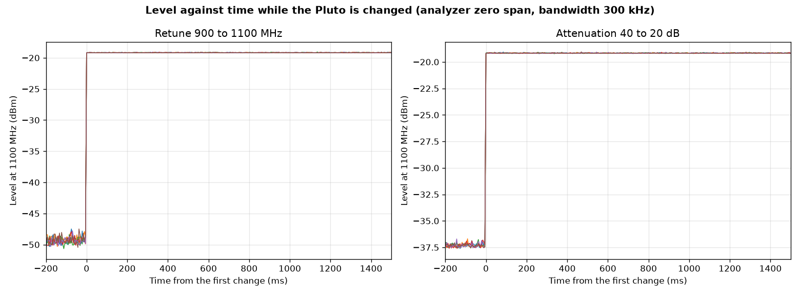
- Analyzer at 1100 MHz with zero span: it records level against time, one point every 5.3 ms, bandwidth 300 kHz.
- Left: the Pluto was moved from 900 to 1100 MHz. Right: attenuation changed from 40 to 20 dB. Six repeats each.
- In every repeat the level is within 0.5 dB of its final value at the first point after the change. Settling takes less than one point.
- The delay between sending the command over USB and the change appearing was not measured.
Full map, tone scale 0.5
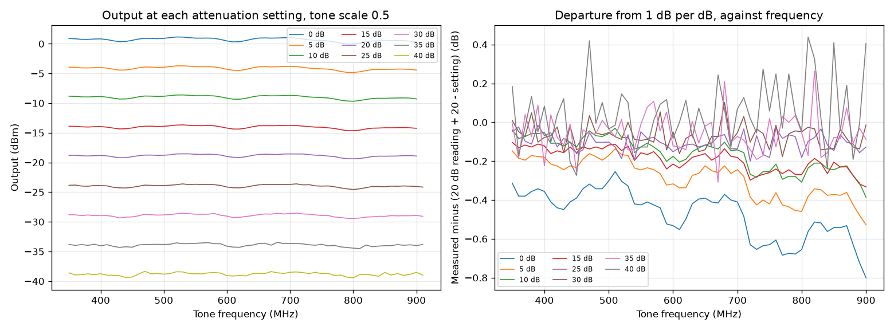
- 1575 readings at 175 frequencies (still running).
- At 0 dB attenuation: highest 1.14 dBm at 520 MHz, lowest −6.36 dBm at 1630 MHz.
- Inside 1000 to 1200 MHz at 0 dB: −1.16 to 0.20 dBm.
- Full table:
pluto_map_table.csv.
Full map, tone scale 1.0
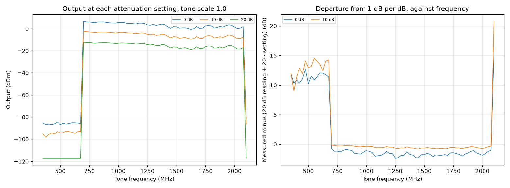
- 210 readings at 70 frequencies (still running).
- At 0 dB attenuation: highest 7.01 dBm at 525 MHz, lowest −0.54 dBm at 1625 MHz.
- Inside 1000 to 1200 MHz at 0 dB: 4.27 to 5.79 dBm.
- Full table:
pluto_map_scale1_table.csv.
IF band table: 1000 to 1200 MHz in 1 MHz steps
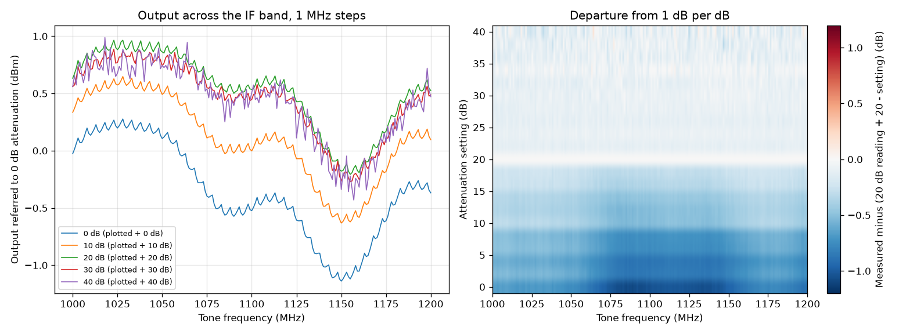
- 201 frequencies × 21 attenuation settings (0 to 40 dB in 2 dB steps) = 4221 readings. Tone scale 0.5, bandwidth 3 kHz.
- At 0 dB: −1.14 dBm (lowest, at 1150 MHz) to 0.28 dBm (highest, at 1028 MHz).
- At 20 dB: −20.21 to −19.04 dBm.
- Departure from 1 dB per dB (relative to the 20 dB reading): −1.09 to −0.65 dB at 0 dB; −0.32 to 0.16 dB at 40 dB.
- Largest change between neighbouring 1 MHz points: 0.09 dB. A straight line between table points is good to under 0.1 dB.
- Full table:
pluto_characterization\pluto_if_band_table.csv.
| Frequency (MHz) | 0 dB | 4 dB | 10 dB | 20 dB | 30 dB | 40 dB |
|---|
| 1000 | −0.03 | −3.95 | −9.66 | −19.37 | −29.44 | −39.44 |
| 1010 | 0.14 | −3.79 | −9.52 | −19.21 | −29.29 | −39.25 |
| 1020 | 0.18 | −3.74 | −9.46 | −19.12 | −29.19 | −39.34 |
| 1030 | 0.20 | −3.71 | −9.43 | −19.12 | −29.18 | −39.20 |
| 1040 | 0.17 | −3.75 | −9.48 | −19.13 | −29.20 | −39.40 |
| 1050 | 0.11 | −3.79 | −9.51 | −19.14 | −29.26 | −39.26 |
| 1060 | −0.04 | −3.89 | −9.60 | −19.20 | −29.29 | −39.37 |
| 1070 | −0.28 | −4.09 | −9.78 | −19.31 | −29.43 | −39.47 |
| 1080 | −0.51 | −4.30 | −9.97 | −19.44 | −29.53 | −39.54 |
| 1090 | −0.57 | −4.37 | −10.02 | −19.50 | −29.58 | −39.61 |
| 1100 | −0.52 | −4.35 | −10.00 | −19.46 | −29.55 | −39.49 |
| 1110 | −0.45 | −4.27 | −9.91 | −19.43 | −29.50 | −39.53 |
| 1120 | −0.51 | −4.34 | −9.98 | −19.48 | −29.56 | −39.57 |
| 1130 | −0.74 | −4.56 | −10.20 | −19.70 | −29.78 | −39.91 |
| 1140 | −1.01 | −4.84 | −10.48 | −19.98 | −30.03 | −40.03 |
| 1150 | −1.14 | −5.00 | −10.63 | −20.18 | −30.27 | −40.34 |
| 1160 | −1.05 | −4.95 | −10.58 | −20.19 | −30.25 | −40.32 |
| 1170 | −0.76 | −4.67 | −10.32 | −19.97 | −30.02 | −40.09 |
| 1180 | −0.47 | −4.38 | −10.04 | −19.70 | −29.81 | −39.72 |
| 1190 | −0.34 | −4.22 | −9.89 | −19.52 | −29.62 | −39.47 |
| 1200 | −0.37 | −4.25 | −9.90 | −19.47 | −29.51 | −39.53 |
Output in dBm. Every tenth frequency shown.
IF band: tone scale 1.0
| Frequency (MHz) | Scale 1.0 at 0 dB (dBm) | Short of +6.02 dB (dB) | Scale 1.0 at 10 dB (dBm) | Short of +6.02 dB (dB) | Scale 1.0 at 20 dB (dBm) | Short of +6.02 dB (dB) |
|---|
| 1000 | 5.64 | −0.35 | −3.55 | 0.10 | −13.24 | 0.10 |
| 1010 | 5.76 | −0.39 | −3.39 | 0.10 | −13.07 | 0.11 |
| 1020 | 5.77 | −0.44 | −3.34 | 0.10 | −13.00 | 0.10 |
| 1030 | 5.78 | −0.44 | −3.33 | 0.10 | −12.99 | 0.09 |
| 1040 | 5.70 | −0.48 | −3.36 | 0.10 | −13.01 | 0.10 |
| 1050 | 5.57 | −0.56 | −3.39 | 0.09 | −13.01 | 0.12 |
| 1060 | 5.24 | −0.73 | −3.50 | 0.09 | −13.07 | 0.09 |
| 1070 | 4.85 | −0.88 | −3.69 | 0.07 | −13.20 | 0.11 |
| 1080 | 4.55 | −0.97 | −3.89 | 0.07 | −13.33 | 0.08 |
| 1090 | 4.54 | −0.90 | −3.96 | 0.05 | −13.39 | 0.11 |
| 1100 | 4.67 | −0.82 | −3.94 | 0.04 | −13.36 | 0.10 |
| 1110 | 4.80 | −0.77 | −3.86 | 0.04 | −13.31 | 0.11 |
| 1120 | 4.74 | −0.77 | −3.91 | 0.05 | −13.36 | 0.10 |
| 1130 | 4.50 | −0.77 | −4.15 | 0.04 | −13.58 | 0.11 |
| 1140 | 4.25 | −0.73 | −4.43 | 0.04 | −13.86 | 0.12 |
| 1150 | 4.27 | −0.59 | −4.58 | 0.04 | −14.04 | 0.11 |
| 1160 | 4.51 | −0.46 | −4.53 | 0.03 | −14.05 | 0.12 |
| 1170 | 4.86 | −0.38 | −4.27 | 0.05 | −13.87 | 0.09 |
| 1180 | 5.12 | −0.42 | −3.98 | 0.06 | −13.59 | 0.12 |
| 1190 | 5.13 | −0.54 | −3.83 | 0.06 | −13.40 | 0.11 |
| 1200 | 5.02 | −0.61 | −3.86 | 0.05 | −13.37 | 0.10 |
“Short of +6.02 dB” is the scale 1.0 reading minus the scale 0.5 reading minus 6.02 dB. Zero means the output doubled in voltage as it should. At 0 dB attenuation the output is 0.35 to 1.0 dB short: the highest output in the IF band is +4.25 to +5.8 dBm. At 10 and 20 dB it is within 0.12 dB.
LO leakage and other sideband against level
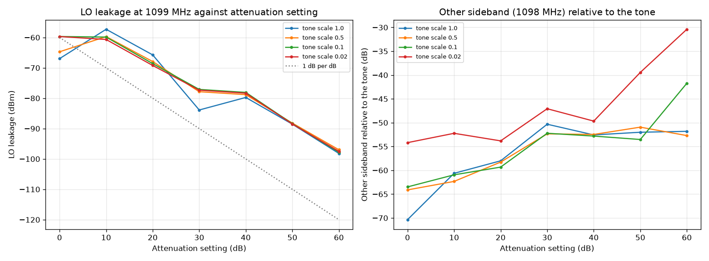
| Attenuation (dB) | Tone scale | Tone (dBm) | LO leakage (dBm) | LO leakage (dB rel. tone) | Other sideband (dBm) | Other sideband (dB rel. tone) |
|---|
| 0 | 1.0 | 4.7 | −67.0 | −71.7 | −65.7 | −70.4 |
| 10 | 1.0 | −3.9 | −57.3 | −53.4 | −64.6 | −60.6 |
| 20 | 1.0 | −13.3 | −65.7 | −52.4 | −71.3 | −58.0 |
| 30 | 1.0 | −23.3 | −83.9 | −60.6 | −73.7 | −50.3 |
| 40 | 1.0 | −33.8 | −79.7 | −46.0 | −86.3 | −52.6 |
| 50 | 1.0 | −44.0 | −88.6 | −44.5 | −96.0 | −52.0 |
| 60 | 1.0 | −54.0 | −98.2 | −44.2 | −105.8 | −51.8 |
| 0 | 0.5 | −0.5 | −64.7 | −64.2 | −64.6 | −64.1 |
| 10 | 0.5 | −10.0 | −59.7 | −49.7 | −72.3 | −62.3 |
| 20 | 0.5 | −19.5 | −67.9 | −48.5 | −77.7 | −58.3 |
| 30 | 0.5 | −29.5 | −77.9 | −48.4 | −81.8 | −52.3 |
| 40 | 0.5 | −39.8 | −78.8 | −39.0 | −92.3 | −52.5 |
| 50 | 0.5 | −50.1 | −88.2 | −38.1 | −101.1 | −50.9 |
| 60 | 0.5 | −60.2 | −97.0 | −36.8 | −112.9 | −52.7 |
| 0 | 0.2 | −8.3 | −60.5 | −52.3 | −72.2 | −63.9 |
| 10 | 0.2 | −17.9 | −59.9 | −42.1 | −77.6 | −59.7 |
| 20 | 0.2 | −27.4 | −68.5 | −41.1 | −87.5 | −60.1 |
| 30 | 0.2 | −37.8 | −77.7 | −39.9 | −89.7 | −51.9 |
| 40 | 0.2 | −47.8 | −78.4 | −30.6 | −101.0 | −53.2 |
| 50 | 0.2 | −58.1 | −88.3 | −30.2 | −109.5 | −51.4 |
| 60 | 0.2 | −68.2 | −97.5 | −29.3 | −117.0 | −48.9 |
| 0 | 0.1 | −14.3 | −59.7 | −45.4 | −77.8 | −63.5 |
| 10 | 0.1 | −23.9 | −59.9 | −36.0 | −84.8 | −60.9 |
| 20 | 0.1 | −33.8 | −68.6 | −34.8 | −93.1 | −59.3 |
| 30 | 0.1 | −43.9 | −77.1 | −33.2 | −96.1 | −52.2 |
| 40 | 0.1 | −53.8 | −78.1 | −24.3 | −106.6 | −52.8 |
| 50 | 0.1 | −64.1 | −88.4 | −24.3 | −117.7 | −53.5 |
| 60 | 0.1 | −74.2 | −97.8 | −23.6 | −115.9 | −41.7 |
| 0 | 0.05 | −20.3 | −60.3 | −40.1 | −80.5 | −60.2 |
| 10 | 0.05 | −29.9 | −59.7 | −29.8 | −96.5 | −66.6 |
| 20 | 0.05 | −39.8 | −69.3 | −29.5 | −97.9 | −58.0 |
| 30 | 0.05 | −49.9 | −77.3 | −27.4 | −100.3 | −50.4 |
| 40 | 0.05 | −59.9 | −78.1 | −18.2 | −109.8 | −50.0 |
| 50 | 0.05 | −70.2 | −88.2 | −18.0 | −116.9 | −46.8 |
| 60 | 0.05 | −80.2 | −97.2 | −17.0 | −118.3 | −38.1 |
| 0 | 0.02 | −28.3 | −59.7 | −31.4 | −82.5 | −54.2 |
| 10 | 0.02 | −38.3 | −60.7 | −22.4 | −90.5 | −52.2 |
| 20 | 0.02 | −47.9 | −69.2 | −21.3 | −101.7 | −53.8 |
| 30 | 0.02 | −57.9 | −77.4 | −19.4 | −105.0 | −47.1 |
| 40 | 0.02 | −67.9 | −78.3 | −10.4 | −117.6 | −49.7 |
| 50 | 0.02 | −78.2 | −88.5 | −10.3 | −117.6 | −39.4 |
| 60 | 0.02 | −88.2 | −97.5 | −9.3 | −118.6 | −30.4 |
- Tone at 1100 MHz, LO at 1099 MHz, other sideband at 1098 MHz. Each read with a 300 Hz bandwidth, 50 kHz span.
- The analyzer reference level was chosen from the expected tone level: +10 dBm, −10 dBm, or −30 dBm with the preamp.
- Analyzer noise with the preamp is about −118 dBm, so sideband readings near that value are limits.
- The LO leakage does not depend on the tone scale. It is set by the attenuation setting only.
- From 0 to 10 dB attenuation it stays near −60 dBm. From 40 dB up it falls 1 dB per dB.
- The other sideband follows the tone: 64 to 72 dB under it at scale 0.5 to 1.0.
- Same pattern at 1000 and 1200 MHz (in
overnight_summary.json).
Tone offset at other LO frequencies
| LO (MHz) | Offset (MHz) | Tone (dBm) | LO leakage (dB rel. tone) | Other sideband (dB rel. tone) |
|---|
| 1000 | 0.5 | 0.16 | −59.6 | −63.1 |
| 1000 | 1.0 | 0.11 | −68.2 | −61.6 |
| 1000 | 2.0 | 0.13 | −68.6 | −61.9 |
| 1000 | 5.0 | 0.00 | −67.2 | −62.0 |
| 1000 | 8.0 | −0.25 | −63.8 | −61.2 |
| 1000 | 10.0 | −1.13 | −62.4 | −61.5 |
| 1000 | −1.0 | 0.07 | −62.5 | −61.2 |
| 1000 | −5.0 | −0.18 | −64.9 | −63.1 |
| 1200 | 0.5 | −0.26 | −66.6 | −72.7 |
| 1200 | 1.0 | −0.30 | −71.8 | −72.9 |
| 1200 | 2.0 | −0.30 | −73.2 | −73.0 |
| 1200 | 5.0 | −0.49 | −72.1 | −73.7 |
| 1200 | 8.0 | −0.79 | −71.8 | −71.1 |
| 1200 | 10.0 | −1.74 | −65.1 | −71.1 |
| 1200 | −1.0 | −0.29 | −69.9 | −72.1 |
| 1200 | −5.0 | −0.46 | −73.3 | −74.8 |
| 400 | 0.5 | 1.01 | −72.4 | −75.2 |
| 400 | 1.0 | 0.93 | −71.8 | −75.9 |
| 400 | 2.0 | 0.93 | −66.2 | −73.0 |
| 400 | 5.0 | 0.73 | −71.1 | −76.3 |
| 400 | 8.0 | 0.42 | −73.9 | −72.5 |
| 400 | 10.0 | −0.55 | −73.1 | −74.4 |
| 400 | −1.0 | 0.95 | −70.7 | −76.1 |
| 400 | −5.0 | 0.78 | −72.3 | −71.6 |
| 2000 | 0.5 | −4.03 | −69.0 | −60.6 |
| 2000 | 1.0 | −4.11 | −69.4 | −58.6 |
| 2000 | 2.0 | −4.19 | −68.0 | −59.6 |
| 2000 | 5.0 | −4.60 | −67.0 | −58.9 |
| 2000 | 8.0 | −5.11 | −66.4 | −59.3 |
| 2000 | 10.0 | −6.20 | −66.3 | −56.8 |
| 2000 | −1.0 | −3.97 | −68.6 | −61.3 |
| 2000 | −5.0 | −3.80 | −67.7 | −59.8 |
Attenuation 0 dB, tone scale 0.5, bandwidth 1 kHz. The other sideband is 57 to 76 dB under the tone at every LO tried; it is worst at 2000 MHz (57 to 61 dB under).
Low level at every 100 MHz
| Frequency (MHz) | 0 dB | 10 | 20 | 30 | 40 | 50 | 60 | 70 | 80 | 89.75 dB | Largest departure, 20 to 89.75 dB (dB) |
|---|
| 500 | 1.00 | −8.76 | −18.69 | −28.80 | −38.85 | −49.08 | −59.16 | −69.22 | −79.08 | −88.94 | 0.52 |
| 600 | 0.56 | −9.09 | −18.92 | −28.98 | −39.02 | −49.32 | −59.35 | −69.44 | −79.56 | −88.80 | 0.64 |
| 700 | 1.10 | −8.62 | −18.48 | −28.57 | −38.64 | −48.92 | −59.01 | −69.04 | −78.97 | −88.73 | 0.55 |
| 800 | 0.04 | −9.59 | −19.32 | −29.43 | −39.55 | −49.74 | −59.85 | −69.92 | −79.82 | −89.64 | 0.60 |
| 900 | 0.35 | −9.22 | −18.86 | −28.94 | −39.02 | −49.25 | −59.46 | −69.44 | −79.42 | −88.99 | 0.60 |
| 1300 | −1.58 | −10.96 | −20.45 | −30.50 | −40.56 | −50.78 | −60.96 | −70.95 | −80.87 | −90.74 | 0.54 |
| 1400 | −1.91 | −11.31 | −20.78 | −30.83 | −40.83 | −51.15 | −61.27 | −71.31 | −81.32 | −90.74 | 0.54 |
| 1500 | −4.00 | −13.36 | −22.85 | −32.87 | −43.20 | −53.28 | −63.36 | −73.37 | −83.46 | −93.23 | 0.63 |
| 1600 | −5.24 | −14.59 | −24.05 | −34.07 | −44.06 | −54.38 | −64.55 | −74.62 | −84.43 | −94.23 | 0.56 |
| 1700 | −5.32 | −14.62 | −24.07 | −34.13 | −44.24 | −54.45 | −64.48 | −74.51 | −84.50 | −94.35 | 0.53 |
| 1800 | −3.22 | −12.55 | −22.01 | −32.08 | −42.23 | −52.37 | −62.62 | −72.56 | −82.47 | −91.77 | 0.61 |
| 1900 | −4.54 | −13.90 | −23.52 | −33.60 | −43.65 | −53.91 | −64.10 | −74.09 | −84.01 | −94.63 | 1.35 |
Output in dBm. Three analyzer settings tied together as in the low level test above. 1000, 1100 and 1200 MHz are in that test.
Tuning step
| Base (MHz) | Asked for (Hz above base) | Tone moved (Hz) | Tone moved, drift removed (Hz) |
|---|
| 1000 | 0 | 0 | 0 |
| 1000 | 1 | 7 | 3 |
| 1000 | 2 | 14 | 5 |
| 1000 | 5 | 20 | 7 |
| 1000 | 10 | 31 | 14 |
| 1000 | 20 | 43 | 21 |
| 1000 | 50 | 82 | 56 |
| 1000 | 100 | 136 | 106 |
| 1000 | 200 | 239 | 205 |
| 1000 | 500 | 542 | 503 |
| 1000 | 1000 | 1044 | 1001 |
| 1000 | 2000 | 2049 | 2002 |
| 1000 | 5000 | 5053 | 5001 |
| 1000 | 0 | 56 | 0 |
| 1100 | 0 | 0 | 0 |
| 1100 | 1 | 28 | 14 |
| 1100 | 2 | 53 | 25 |
| 1100 | 5 | 77 | 35 |
| 1100 | 10 | 101 | 44 |
| 1100 | 20 | 125 | 54 |
| 1100 | 50 | 170 | 85 |
| 1100 | 100 | 233 | 134 |
| 1100 | 200 | 342 | 229 |
| 1100 | 500 | 652 | 525 |
| 1100 | 1000 | 1161 | 1019 |
| 1100 | 2000 | 2169 | 2013 |
| 1100 | 5000 | 5177 | 5007 |
| 1100 | 0 | 184 | 0 |
- The tone was asked to move by 1 Hz to 5 kHz and read in a 1 kHz span with a 10 Hz bandwidth.
- The first and last rows of each set both ask for +0 Hz. The tone had moved between them: 56 Hz in 23 s at 1000 MHz; 184 Hz in 23 s at 1100 MHz.
- That drift is taken as a straight line in time and subtracted in the last column.
With the drift removed the tone follows requests of 50 Hz and more within about 10 Hz at 1000 MHz. The 1100 MHz set drifted faster and is less clear. The LO setting has a resolution of a few Hz; drift is the larger effect.
Spectrum close to the tone
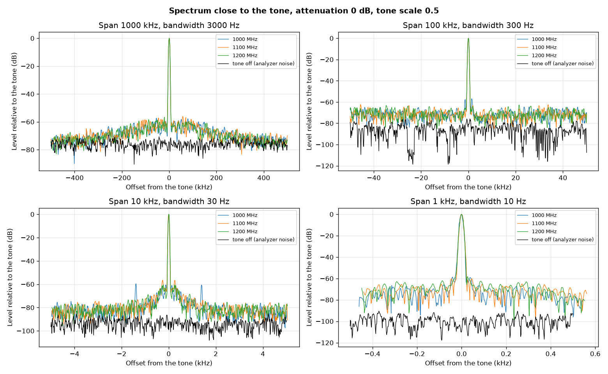
| Tone (MHz) | Span (kHz) | Bandwidth (Hz) | Noise at 30 to 45% of the span from the tone (dB rel. tone) | Same, per Hz (dBc/Hz) | Largest point beyond 10% of the span (dB rel. tone) |
|---|
| 1000 | 1000 | 3000 | −72.3 | −107.1 | −59.9 |
| 1100 | 1000 | 3000 | −72.5 | −107.3 | −58.4 |
| 1200 | 1000 | 3000 | −73.0 | −107.7 | −59.3 |
| 1000 | 100 | 300 | −70.4 | −95.1 | −64.6 |
| 1100 | 100 | 300 | −71.4 | −96.2 | −62.3 |
| 1200 | 100 | 300 | −71.1 | −95.9 | −62.7 |
| 1000 | 10 | 30 | −83.6 | −98.3 | −59.6 |
| 1100 | 10 | 30 | −83.0 | −97.8 | −71.6 |
| 1200 | 10 | 30 | −82.8 | −97.6 | −72.5 |
| 1000 | 1 | 10 | −75.4 | −85.4 | −66.5 |
| 1100 | 1 | 10 | −72.8 | −82.8 | −65.1 |
| 1200 | 1 | 10 | −73.2 | −83.2 | −63.0 |
\[ L(\Delta f) = P_\text{noise} - P_\text{tone} - 10\log_{10}(B) \]
\(B\) = analyzer bandwidth in Hz. The black trace is the analyzer with the tone off: its noise floor, but not its phase noise, which only appears when a signal is present. The Siglent's own phase noise is specified near −98 dBc/Hz at 10 kHz, so these numbers are an upper limit on the Pluto, not its true value.
Pulsed output, 13 Oct
Script sdr\pluto_pulse.py. The Pluto is sent a repeating block of samples: a constant value for the pulse, zeros between pulses. The RF is at the LO frequency during the pulse. Sample rate 30.72 MS/s, so the width is a whole number of 32.55 ns samples. Same wiring: Pluto TX straight into the spectrum analyzer. 1100 MHz.
Level during the pulse
| Attenuation (dB) | Amplitude | Level during the pulse (dBm) | Continuous tone at the same setting (dBm) |
|---|
| 0 | 0.25 | −5.58 | — |
| 0 | 0.5 | 0.28 | 0.10 |
| 0 | 1.0 | 5.64 | 4.7 (warm) |
| 20 | 0.25 | −24.66 | — |
| 20 | 0.5 | −18.71 | −18.93 |
| 20 | 1.0 | −12.56 | −13.3 (warm) |
- 500 µs pulse every 2 ms, read in zero span with a 300 kHz bandwidth.
- The pulse level matches the continuous tone within 0.2 dB where both were read cold (amplitude 0.5). “Warm” values are from the night before with the Pluto 9 °C hotter, when it put out 0.4 to 0.9 dB less.
- Between pulses the reading is −54.6 to −55.7 dBm, which is the analyzer's noise in this bandwidth. The pulse is at least 55 dB above it. The LO leakage (about −60 dBm at 0 dB attenuation, from the continuous-tone tests) is still there between pulses, so the true on/off ratio at 0 dB attenuation is about 60 dB.
Pulse shape in time
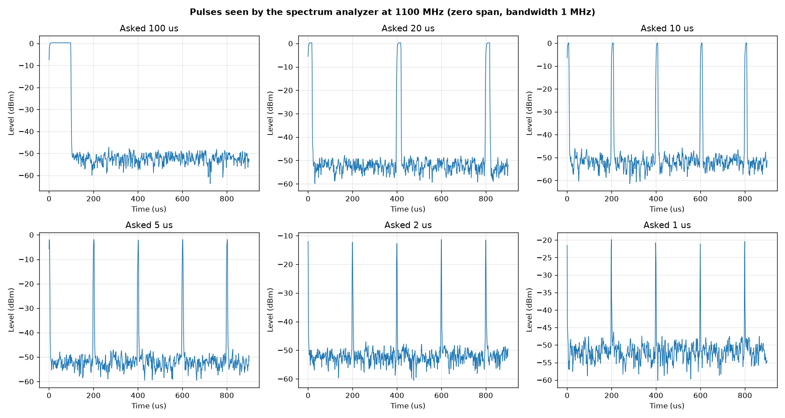
| Asked width (µs) | Measured width between −6 dB points (µs) | Time between pulses (µs) | Peak reading (dBm) | Level between pulses (dBm) |
|---|
| 100 | 98 | — | 0.31 | −52.3 |
| 20 | 18 | 400 | 0.31 | −52.3 |
| 10 | 9 | 200 | 0.19 | −51.9 |
| 5 | 4 | 200 | −1.88 | −52.2 |
| 2 | 2 | 200 | −11.33 | −52.2 |
| 1 | 2 | 200 | −19.84 | −52.4 |
- Analyzer zero span, 1 MHz bandwidth (its widest), video trigger. Its shortest sweep is 900 µs, which is one point every 1.2 µs.
- Pulses of 10 µs and longer are shown correctly: right width, right spacing (400 µs for the 20 µs pulse, 200 µs for the others), flat top at +0.2 to +0.3 dBm.
- Pulses of 5 µs and shorter read low (−1.9, −11.3, −19.8 dBm). That is the analyzer: one point every 1.2 µs and a 1 MHz filter cannot follow them. It is not the Pluto; see the spectrum below.
- This analyzer cannot show the shape of the 50 ns to 1.2 µs pulses the design uses. That needs a detector and the oscilloscope, or the SM200B.
Pulse spectrum
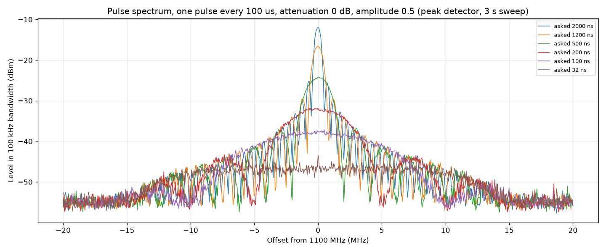
| Asked width (ns) | Samples | Actual width (ns) | Peak in 100 kHz bandwidth (dBm) | Relative to a continuous tone (dB) | Departure from 20 log10(width) (dB) | First null, measured (MHz) | First null, expected 1/width (MHz) |
|---|
| 5000 | 154 | 5013.0 | −4.75 | −4.78 | −0.78 | — | 0.20 |
| 2000 | 61 | 1985.7 | −12.00 | −12.03 | 0.01 | — | 0.50 |
| 1200 | 37 | 1204.4 | −16.59 | −16.62 | −0.24 | 0.85 | 0.83 |
| 1000 | 31 | 1009.1 | −17.89 | −17.92 | 0.00 | 1.01 | 0.99 |
| 500 | 15 | 488.3 | −24.16 | −24.19 | 0.03 | 2.05 | 2.05 |
| 300 | 9 | 293.0 | −28.61 | −28.65 | 0.02 | 3.44 | 3.41 |
| 200 | 6 | 195.3 | −31.85 | −31.89 | 0.30 | — | 5.12 |
| 130 | 4 | 130.2 | −34.81 | −34.84 | 0.87 | — | 7.68 |
| 100 | 3 | 97.7 | −37.12 | −37.15 | 1.05 | — | 10.24 |
| 65.0 | 2 | 65.1 | −40.22 | −40.25 | 1.48 | — | 15.36 |
| 32.5 | 1 | 32.6 | −43.43 | −43.47 | 4.27 | — | 30.67 |
- One pulse every 100 µs, attenuation 0 dB, amplitude 0.5. Analyzer: 100 kHz bandwidth, positive-peak detector, 3 s sweep, so each point of the trace sees about 40 pulses and keeps the largest.
- A first attempt with a normal fast sweep gave a ragged trace (each point either caught a pulse or missed it). Those traces are saved as
pulse_spectrum_* and are not used. - The spectrum of a rectangular pulse of width τ has nulls at multiples of 1/τ from the centre. The null positions were found from the trace and compared with 1/τ.
- In a bandwidth narrower than 1/τ the peak reading falls 20 dB for each tenfold drop in width. The departure column is the reading minus that rule, taking the 1000 ns pulse as the reference.
\[ \Delta f_\text{null} = \frac{1}{\tau} \qquad P_\text{peak}(\tau) = P_\text{peak}(\tau_0) + 20\log_{10}\!\left(\frac{\tau}{\tau_0}\right) \]
- The 5000 ns pulse is wider than the analyzer filter can treat as short, so the 20 log rule does not apply to it.
- From 2000 ns down to 300 ns the nulls are where 1/τ says and the peak follows the 20 log rule within 0.3 dB. The Pluto makes these pulses with the right width and full amplitude.
- For 200 ns the first null (5.1 MHz expected) can be seen in the plot near 5 MHz.
- Below about 130 ns the departure grows (+0.9 dB at 130 ns, +1.5 dB at 65 ns, +4.3 dB at one sample). The spectrum is cut off beyond about ±10 MHz: the Pluto's RF bandwidth setting is 18 MHz. A pulse shorter than about 100 ns comes out wider and lower than asked.
- To make the 50 ns pulses the design calls for, the Pluto's sample rate and RF bandwidth would have to be raised. That has not been tried and would need its own check.
- After each pulse test the normal tone generator was switched back on and read: −18.82 and −18.99 dBm at 20 dB, as before.
Readings that are not used
- The spectrum analyzer's range ends at 2.1 GHz. When a sweep was centred at 2100 MHz the analyzer shortened its span without reporting it, and the script kept using the short span for the readings that followed.
- Affected: every 2100 MHz point, and the whole first tone-scale-1.0 map (213 readings, block name
map_scale1 in the readings file). They read −85 to −117 dBm, which is noise. - They are still in
overnight_readings.csv but are left out of every table and plot. The script now keeps each sweep inside the analyzer's range and the map is retaken as block map_s1. - Found at 22:45 on 12 Oct by checking the map for values that could not be right.
Drift through the night
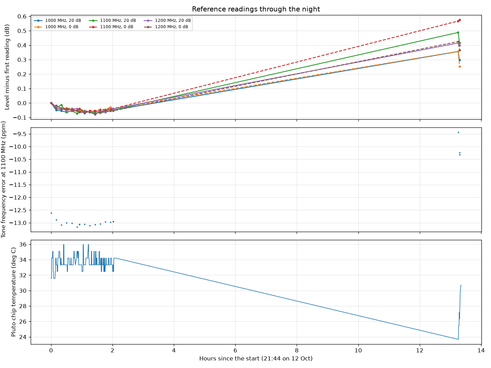
| Reading | Number | First (dBm) | Mean (dBm) | Spread (dB) | Last minus first (dB) |
|---|
| 1000 MHz, 20 dB | 16 | −19.31 | −19.31 | 0.425 | 0.297 |
| 1000 MHz, 0 dB | 16 | 0.03 | 0.03 | 0.415 | 0.254 |
| 1100 MHz, 20 dB | 16 | −19.42 | −19.40 | 0.561 | 0.415 |
| 1100 MHz, 0 dB | 16 | −0.47 | −0.43 | 0.635 | 0.577 |
| 1200 MHz, 20 dB | 16 | −19.43 | −19.42 | 0.494 | 0.400 |
| 1200 MHz, 0 dB | 16 | −0.31 | −0.31 | 0.498 | 0.366 |
- The same six readings were repeated every 10 minutes for 13.3 hours.
- Tone frequency error at 1100 MHz: −13.16 to −9.43 ppm.
- Pluto chip temperature: 23.7 to 36.0 °C.
Level at 1100 MHz, 20 dB, read every 30 s: 3 readings, mean −19.279 dBm, spread 0.601 dB, standard deviation 0.2767 dB.
Hourly repeats (5 so far): the level table (0 to 40 dB at 1000, 1100, 1200 MHz) changed by at most 0.791 dB at any setting; the frequency sweep (350 to 2100 MHz at 20 dB) by at most 4.023 dB at any frequency.